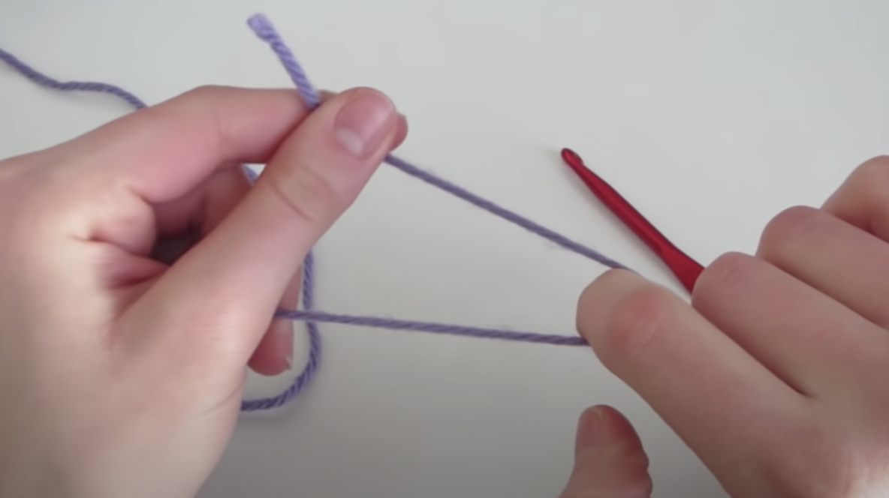
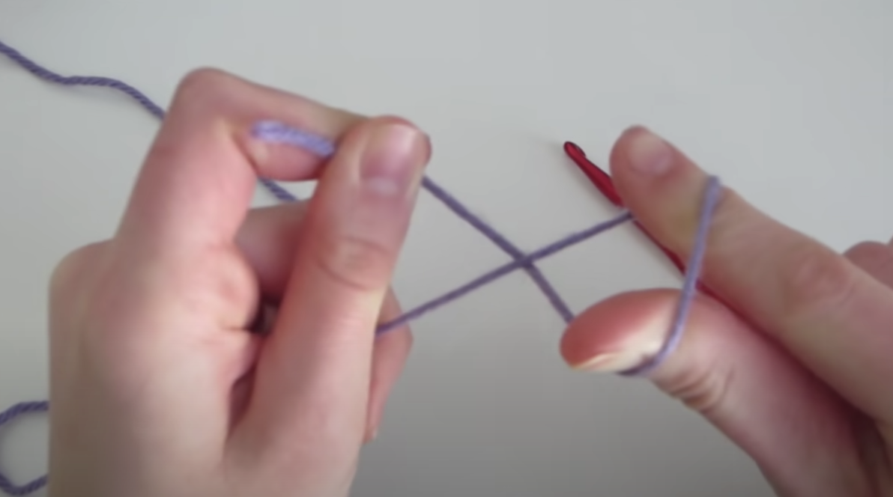
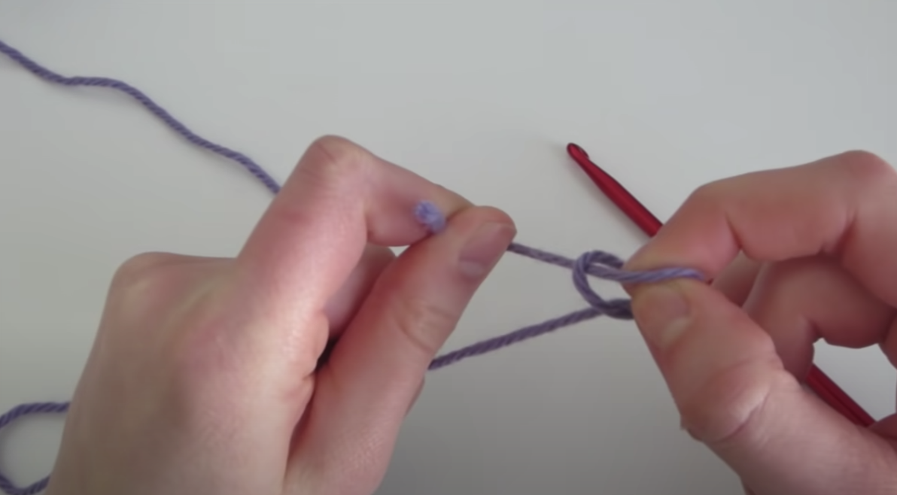
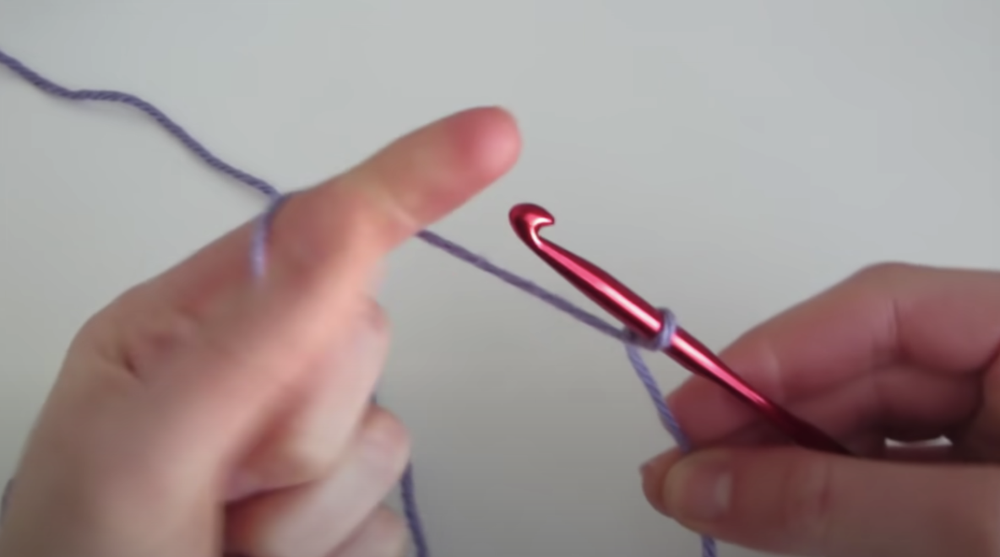
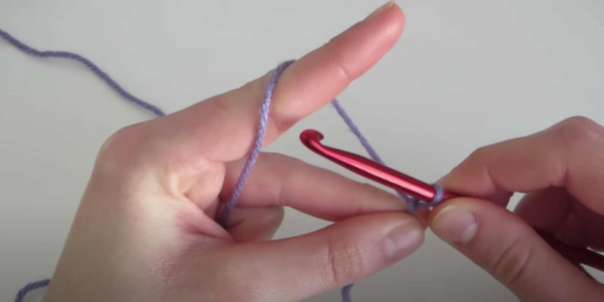
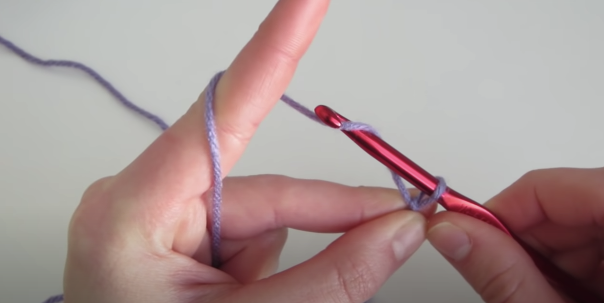
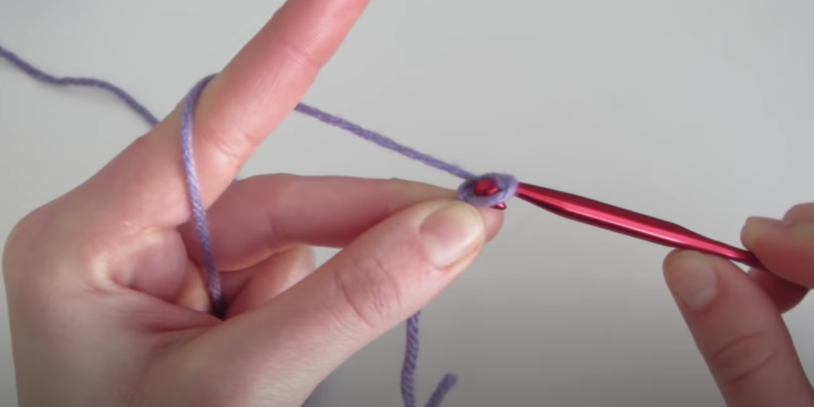
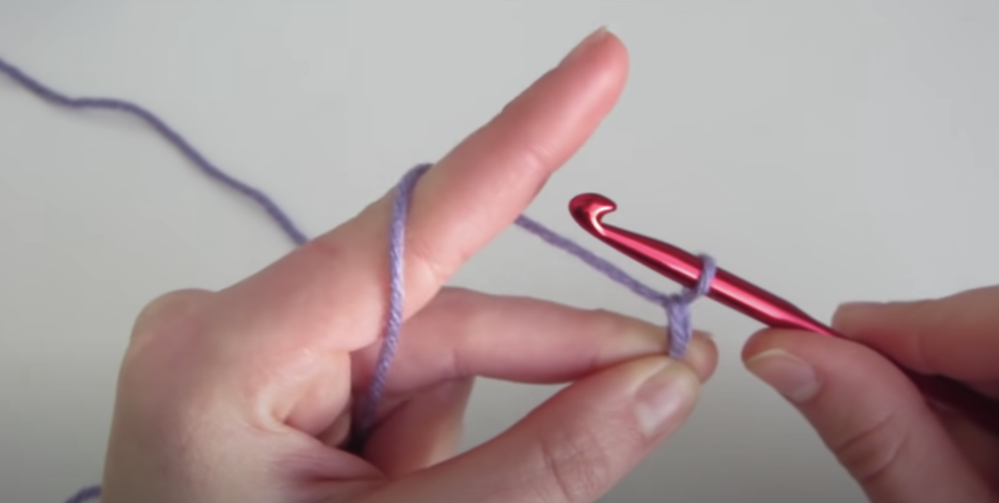
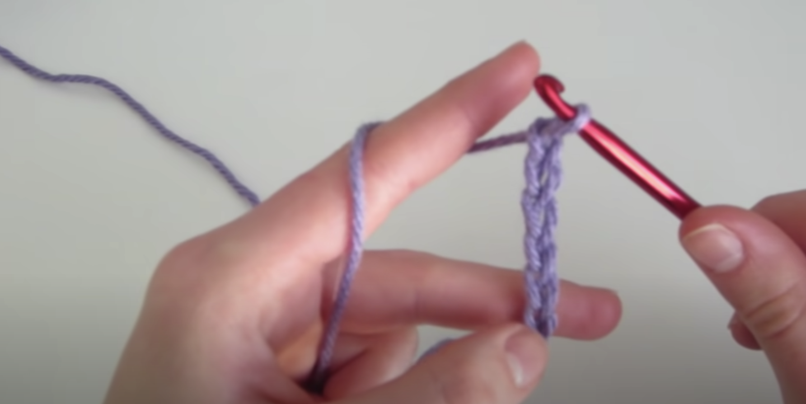

This page will show you how to create a slip knot, and how to create a chain.
A slip knot is how every crochet project begins.
To create a slip knot, hold your yarn in a v-shape with your index finger pointing downwards.
Then, twist your finger upwards creating an x and put your thumb through that same loop.
Grab the tail with your index finger and thumb, and pull it through the loop.
Put your crochet hook in the loop, and pull the yarn to tighten.
A chain is the base layer of a scarf.
To begin, hole your hook and your right hand and wrap the yarn around your left index finger.
Wrap the yarn around your hook,
And pull downwards through the loop.
That makes one stitch.
Repeat this process until you reach the desired width of your scarf.
